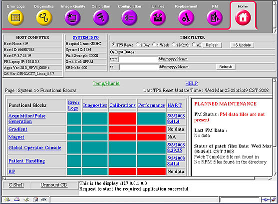
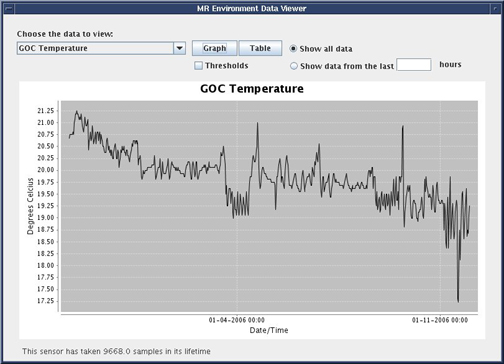
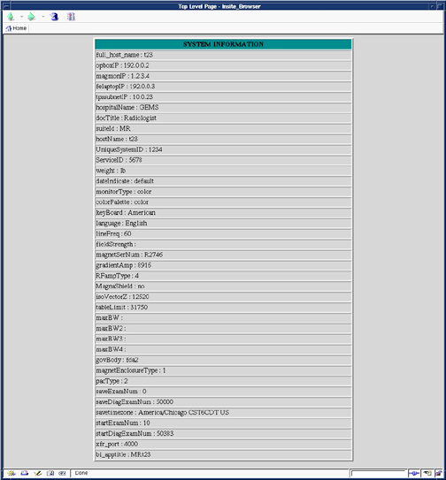
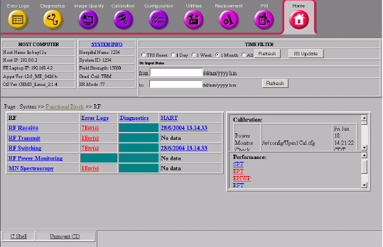
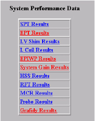
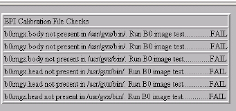

Proprietary to General Electric
Direction 5500113, Rev# 3
Discovery MR450 1.5T Service Methods
Module Version 2.0, Version Date 10/13/09
Proprietary to General Electric |
| Required Persons | Preliminary Reqs | Procedure | Finalization |
|---|---|---|---|
| 1 | Not Applicable | Not Applicable | Not Applicable |
FE Cockpit provides an easier and efficient way to:
Remotely or locally navigate through service data on an MR system.
Understand the operational status of an MR system.
Pinpoint the root cause(s) of MR system failures.
Choose the correct FRU(s).
View Temperature and Humidity data from system components.
Access the FE Cockpit from the Service Browser tool. The Service Key must be installed to use FE Cockpit.
Click [Service Desktop] and select [Service Browser] from the Service Desktop Manager window. The Common Service Desktop home page opens. This home page (see Illustration 1) is the FE Cockpit top-level page.
Illustration 1: FE Cockpit Home Page (example)

You can view the system Temperature and Humidity data from the system sensors on the GOC and SC cabinet. To view data select the Temp/Humid link in the center of the FE Cockpit home page. You have the option to view Temperature or Humidity for the sensors in graph or data format. See Illustration 2. Select [Graph] or [Table] to view data.
Illustration 2: Plot of GOC Temperature (example)

The FE Cockpit top-level page consists of three sections: the Header, Functional Grid, and Planned Maintenance.
Header
Contains all general system information. The Host Computer and System Info boxes contain information specific to the scanner.
The Time Filter area allows you to filter the displayed information based on time criteria. The Help link opens a short help summary page.
Host Computer and System Info
The Host Computer section contains system information including the Host name, Host ID (used for eLicense), IP address, and Software and OS versions.
The System Info link displays details of the hospital, system ID, and system type. See Illustration 3.
Illustration 3: System Information Window (example)

Time Filter
The Functional Grid area displays events that occurred since the last TPS reset. The data can be filtered by TPS Reset, 1 Day, 1 Week, 1 Month, or All. To change the time filter, select the radial button of the selection and click [Refresh].
Click [IIS Update] to update the Install in Spec data in the FE cockpit. The IIS script will run and update the cockpit with all new information. The [Refresh] button only updates data from the error and HART log files.
Data can also be filtered by a specified range of dates. Enter the starting date in the DD/MM/YYYY H:M format. Enter the ending date, using the same format, and click[Refresh].
Functional Grid
Most of the system data is displayed in the functional grid. This area consists of nine main functional blocks. Log data that can be traced to a specific functional area is listed in the columns to the right of the functional blocks.
Functional areas are: Acquisition/Pulse Generation, Gradient, Magnet, Global Operator Console, Patient Handling, RF, Surface Coils, Power/Support Systems, and Software/ Firmware /Config.
Each of the main functional areas can be broken down into mid-level and/or FRU-level pages (See Illustration 4). These mid-level pages present the log information in more specific categories or specific to FRUs. If Calibration or Performance Data is available for that functional area, the details are listed on the mid-level page.
Illustration 4: Mid-level/FRU Page (example)

Planned Maintenance
On the lower right side of the FE cockpit top-level page, is the Planned Maintenance status box.
The status displays in one of the following color-coded text indicators:
Green: PM is due in > than 14 days
Black: PM is due in < than 14 days
Red: PM is overdue (past due date), or PM data files are not present.
The last PM data available on the system displays in this status box. Each test and the status (Pass, Marginal, or Fail) is listed.
Patch status is also listed in the Planned Maintenance window. If the patch configuration file is loaded on the scanner, any required patches are listed.
Several types of data can be seen in the functional grid and the mid-level/FRU pages. Current data is grouped into the following areas:
Error Logs
From the functional grid, if one or more errors are logged for a particular functional block, the corresponding error field lists the number of errors. The error log number links directly to the details for these specific errors (see Illustration 5). If there are no error messages tied to a specific functional block, the field in the Error log column is green.
Illustration 5: Error Logs Detail Page (example)

The Error Log link opens a details page displaying all listed errors.
From the Error logs detail page, the Graph link opens a histogram of the frequency of error occurrence (see Illustration 6).
Illustration 6: Error Code Histogram

The Smart Log link (see Illustration 7) displays the error, and additional information such as the Protocol and Coil in use when the error occurred.
Illustration 7: Smart Log

Smart Log
The Smart Error Log has a color-coded background to separate common errors and messages that are most likely not the problem, from other errors. Errors with a gray background are less critical than errors with a yellow background.
In addition, the Smart Log attempts to determine which errors occurred during a service situation by looking at the “Patient ID” entry, and comparing it to a list of “service” names. Examples are service, DQA, test, and those entries with no digits. Errors that occur during a service situation, are highlighted by a dark yellow “Service” box.
The Smart Log correlates the error to the most recent coil and protocol used. If the protocol entry is too old that it cannot be trusted, the coil, PSD, and protocol names are not be listed at all. If there is an active protocol at the time of the error, you can access specific protocol information by clicking on the protocol name (see Illustration 8).
Illustration 8: Smart Log Protocol Detail

Diagnostics
The Diagnostics column is presented like the errors column. Select the column title to access the details page for the all the diagnostic errors. If a field in the diagnostic column has errors, the number of errors displays as a link to the details page.
Calibrations
The Calibration column only shows a pass/fail status. If all calibrations being traced within a functional block have run, the corresponding grid box is green. It is also green if there are no applicable calibrations. If a calibration was not run, the functional area’s related field will be red.
The Calibration column title displays a new window listing all the calibrations (see Illustration 9). Calibrations that have not been run are listed in red.
The calibration results can be viewed from the mid-level/FRU pages. The block on the mid-level page lists all the pertinent calibrations, the calibration file being searched for, and whether or not the file was found (see Illustration 10). If the file is available, then the time stamp of the file is listed in the right column of the block.
Illustration 9: Calibration Window (example)

Illustration 10: Mid-level Calibration Block (example)

Performance
The Performance column is laid out in a similar fashion as the Calibration column. If a performance test, such as SPT, has failing results, the field corresponding to the affected functional area(s) is red. If all data passes, the field is green.
The Performance column title displays a new window listing all the performance tests (see Illustration 11). Click the test’s results link (see Illustration 11) to view the performance test results.
The performance test results can also be viewed from the mid-level/FRU pages. The status block on each mid-level FRU page lists all the applicable performance tests for the functional area in question. Click on the title of the test to view any results available (see Illustration 12).
Illustration 11: System Performance Data Screen

Illustration 12: Performance Test Details (EPI example)

HART
The last column of the Functional grid displays HART information. If the functional area does not have any FRU’s traced to HART logs, the field is N/A. Otherwise, the field shows whether there is data in the HART log, and if so, the most recent date the data changed.
The HART column title displays the HART log details page (see Illustration 13).
Illustration 13: Hart Message Details (example)

No finalization steps.